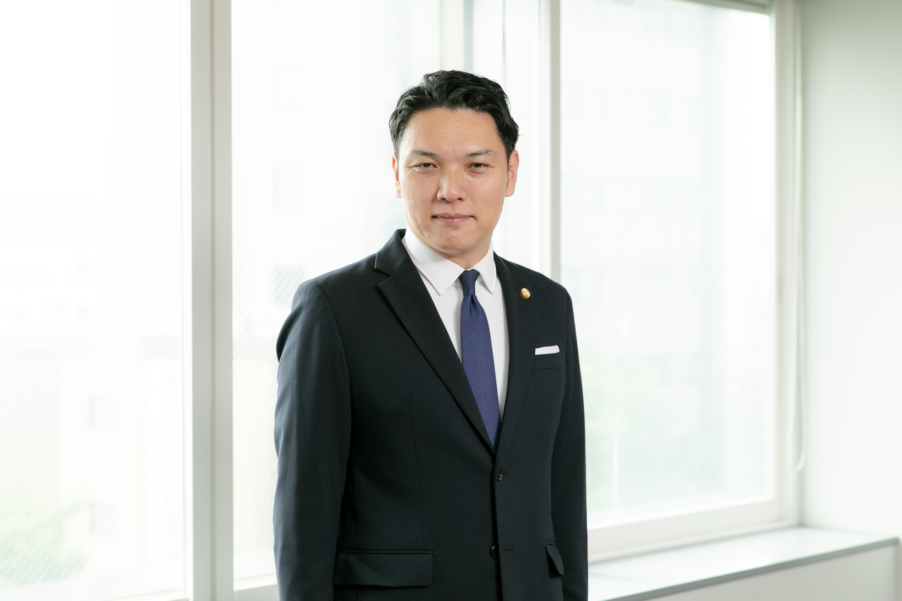
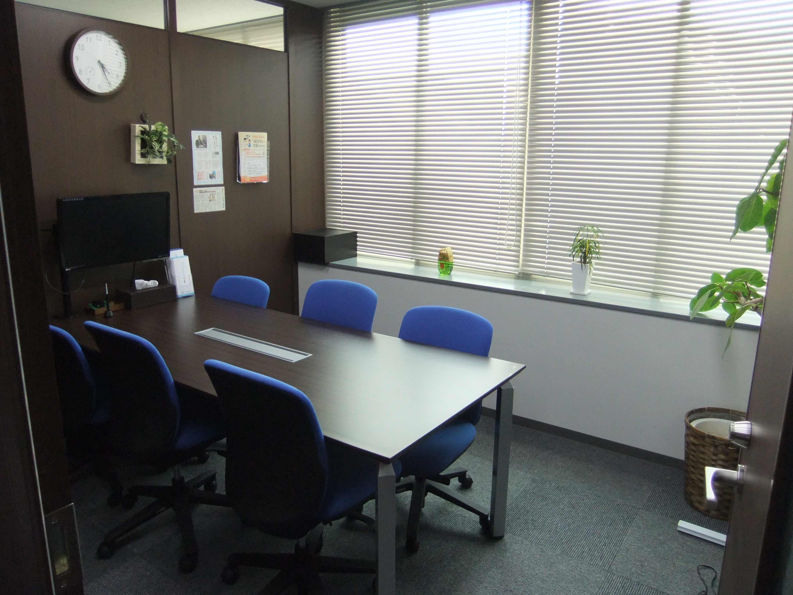
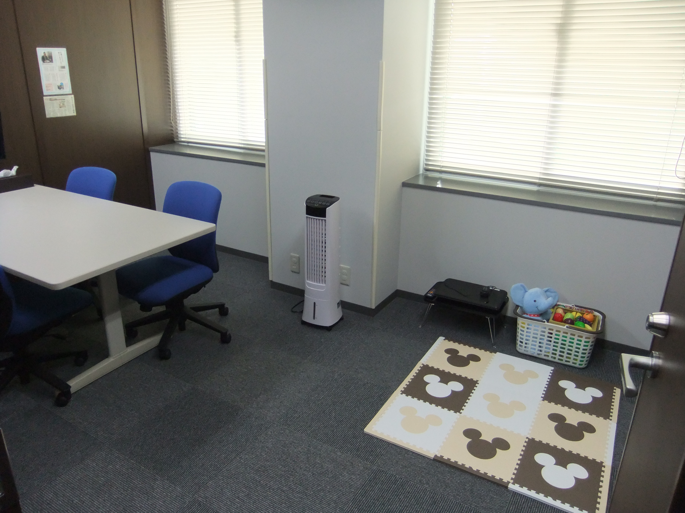
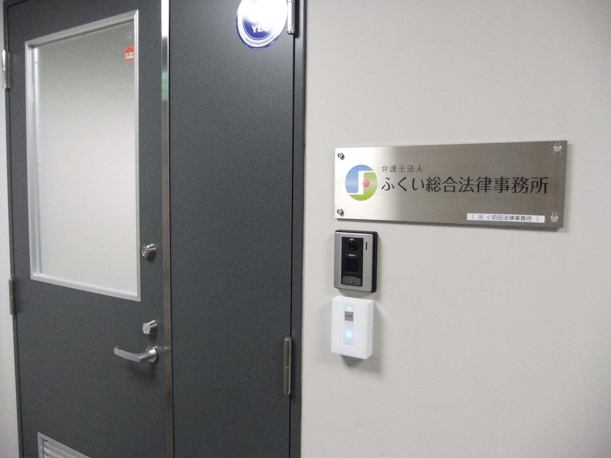

代表弁護士 小前田 宙

一つでも当てはまったら、まずはお話だけでも聞かせてください
「こんなこと相談していいのかな？」と思ったら、
それが相談のタイミングです。
どの手続きが最適か、弁護士がわかりやすくご説明します
SOLUTION 01
借金の返済が困難になった方が、裁判所の手続きにより債務の免責を受け、生活を立て直すための制度です。破産法に基づく法的な手続きであり、財産の一部を保有し続けることもできます。
自己破産について詳しく →SOLUTION 02
借金を大幅に減額し、原則3年（最長5年に延長可能）で分割返済する手続きです。住宅ローン特則を使えば、マイホームを残しながら他の借金を整理できます。
個人再生について詳しく →SOLUTION 03
弁護士が代理人となり、債権者と直接交渉して借金の減額をはかる手続きです。裁判所を通さないため官報に掲載されず、家族や職場に知られずに進められます。
任意整理について詳しく →どの手続きが適しているかは、お一人おひとりの事情によって異なります。
まずはお気軽にご予約のうえ、事務所にお越しください。
借金問題の解決実績400件以上。安心してご相談いただける環境を整えています。
借金問題のご相談は初回無料。費用を気にせずお話しください。相談したからといって、依頼する必要はありません。
弁護士が受任通知を送ることで、債権者からの督促や取立てが止まります。精神的な負担から解放され、落ち着いて生活の立て直しを考えることができます。
他の方に聞かれる心配はありません。お子さま連れでも安心してお越しください。
私は福井で15年にわたり借金問題のご相談を受けてきました。自己破産・個人再生いずれも多数の解決実績があります。ホワイトボードを使って、わかりやすくご説明します。
福井駅近くでアクセス便利。駐車場も完備しています。福井県全域からお越しいただいています。
弁護士費用の分割払いに対応しています。「手持ちがない」という方も、まずはご相談ください。
完全個室の相談室で、落ち着いてお話しいただけます



弁護士法人ふくい総合法律事務所
〒910-0005 福井県福井市大手3丁目14番10号 TMY大名町ビル5階
TEL: 0776-28-2824｜福井駅から徒歩7分・駐車場完備
初めての方でも安心。5つのステップで借金問題を解決します。
お電話・LINE・メールで相談日時をご予約ください。担当者がおおまかなご相談内容をお伺いし、面談日時を決めます。
予約受付：9:30〜20:00（土日祝も対応）／ 相談時間：9:30〜17:00（夜間・土日祝応相談）
事務所にお越しいただき、弁護士が直接お話を伺います。借入状況や生活状況を確認し、自己破産・個人再生・任意整理のどれが最適か、わかりやすくご説明します。
完全個室・キッズスペース完備。お子さま連れも歓迎です。
ご相談後、すぐに依頼する必要はありません。ご自宅でゆっくり検討していただけます。不明な点があれば、何度でもご質問ください。
正式にご依頼いただきましたら、委任契約書を作成します。契約後、弁護士が債権者に受任通知を送付。これにより督促・取立てが止まります。
弁護士費用は分割払いに対応しています。
裁判所への申立てや債権者との交渉など、必要な手続きを弁護士が進めます。進捗は随時ご報告しますので、ご安心ください。

※ プライバシー保護のため、内容を一部変更しています
解決方法・結果
自己破産（同時廃止）を申立て → 免責許可決定。約570万円の借金が全額免責（免除）。
解決方法・結果
管財事件として申立て → 裁量免責が認められ、約900万円の借金が全額免責（免除）。
解決方法・結果
住宅ローン特則付き個人再生 → 借金を約80%減額、月々約4.8万円の返済に。自宅を維持。
代表弁護士 小前田が、債務整理についてわかりやすく解説します
自己破産・個人再生・任意整理の3つの方法について、それぞれの特徴と向いているケースを解説します。
返済が苦しくなったとき、放置するリスクと法的な解決方法についてお話しします。
「自己破産は怖い」というイメージを持つ方へ。手続きの流れと実際の生活への影響を解説します。
債務整理の知識と解決のヒントを、弁護士がわかりやすく解説します
「自己破産」と聞くと人生が終わるイメージを持つ方も多いですが、実際はそうではありません。
自己破産「ギャンブルだから無理」と諦める前に。裁量免責で免除される可能性があります。
任意整理リボ払いは便利に見えて、実は高金利の借金。なぜ元本が減らないのか解説します。
個人再生「家だけは手放したくない」。住宅ローン特則なら自宅を維持しながら借金を減額できます。
債務整理 動画あり自己破産・個人再生・任意整理を比較。どんな人に向いているか動画で解説します。
債務整理 動画あり返済が苦しいと感じたら早めの相談を。放置するリスクと解決方法を動画で解説します。
福井駅から徒歩7分。無料駐車場もあります。
〒910-0005 福井県福井市大手3丁目14番10号 TMY大名町ビル5階
TEL: 0776-28-2824
JR福井駅 西口より徒歩約7分
無料駐車場を備えています。お車でお気軽にお越しください。
秘密厳守。相談したからといって、依頼する必要はありません。
まずはお電話・LINEで相談予約をお取りください。
予約受付：9:30〜20:00（土日祝も対応）／ 相談時間：9:30〜17:00（夜間・土日祝応相談）
お名前・ご希望日時をお伝えいただくとスムーズにご予約いただけます
初回相談無料・秘密厳守｜ご予約受付中